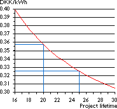

Economics of Offshore
Wind Energy
New
Danish Reports on Offshore Wind Energy
In 1997 the Danish electrical power companies and the Danish Energy agency
finalised plans for large scale investment in offshore wind energy in Danish
waters.
 The plans imply that some 4 100 MW of wind
power are to be installed offshore before the year 2030. Wind would by then
cover some 50 per cent of Danish electricity consumption (out of a total
of 31 TWh/year).
The plans imply that some 4 100 MW of wind
power are to be installed offshore before the year 2030. Wind would by then
cover some 50 per cent of Danish electricity consumption (out of a total
of 31 TWh/year).
Improving
Economics of Offshore Wind Energy
On the previous page, the calculator already includes an example showing
the expected average cost of offshore wind energy in Denmark, using presently
available technology.
 The most important reason why offshore wind energy is becoming economic
is that the cost of foundations has decreased dramatically. The estimated
total investment required to install 1 MW of wind power offshore in Denmark
is around 12 million DKK today, (equivalent to 4 million DEM, or 1.7 million
USD). This includes grid connection etc.
The most important reason why offshore wind energy is becoming economic
is that the cost of foundations has decreased dramatically. The estimated
total investment required to install 1 MW of wind power offshore in Denmark
is around 12 million DKK today, (equivalent to 4 million DEM, or 1.7 million
USD). This includes grid connection etc.
 Since there is substantially more wind at sea than on land, however,
we arrive at an average cost of electricity of some 0.36 DKK/kWh = 0.05
USD/kWh = 0.09 DEM/kWh. (5% real discount rate, 20 year project lifetime,
0.08 DKK/kWh = 0.01 USD/kWh = 0.02 DEM in operation and maintenance cost).
Since there is substantially more wind at sea than on land, however,
we arrive at an average cost of electricity of some 0.36 DKK/kWh = 0.05
USD/kWh = 0.09 DEM/kWh. (5% real discount rate, 20 year project lifetime,
0.08 DKK/kWh = 0.01 USD/kWh = 0.02 DEM in operation and maintenance cost).
Accounting
for Longer Project Lifetime
 It would appear, however that turbines at sea would have a longer
technical lifetime, due to lower turbulence.
It would appear, however that turbines at sea would have a longer
technical lifetime, due to lower turbulence.
 If we assume a project lifetime of, say, 25 years instead of 20, this
makes costs 9 per cent lower, at some 0.325 DKK/kWh.
If we assume a project lifetime of, say, 25 years instead of 20, this
makes costs 9 per cent lower, at some 0.325 DKK/kWh.
 The cost sensitivity to project lifetime is plotted in the accompanying
graph, which was made using the calculator on the previous page.
The cost sensitivity to project lifetime is plotted in the accompanying
graph, which was made using the calculator on the previous page.
 Danish power companies, however, seem to be optimising the projects
with a view to a project lifetime of 50 years. This can be seen from the
fact that they plan to require 50 year design lifetime for both foundations,
towers, nacelle shells, and main shafts in the turbines.
Danish power companies, however, seem to be optimising the projects
with a view to a project lifetime of 50 years. This can be seen from the
fact that they plan to require 50 year design lifetime for both foundations,
towers, nacelle shells, and main shafts in the turbines.
 If we assume that the turbines have a lifetime of 50 years, and add
an overhaul (refurbishment) after 25 years, costing some 25 per cent of
the initial investment (this figure is purely a numerical example), we get
a cost of electricity of 0.283 DKK/kWh, which is similar to average onshore
locations in Denmark.
If we assume that the turbines have a lifetime of 50 years, and add
an overhaul (refurbishment) after 25 years, costing some 25 per cent of
the initial investment (this figure is purely a numerical example), we get
a cost of electricity of 0.283 DKK/kWh, which is similar to average onshore
locations in Denmark.

|
Back | Home | Forward |
© Copyright 1998 Soren Krohn. All rights reserved.
Updated 26 September 2000
http://www.windpower.org/tour/econ/offshore.htm